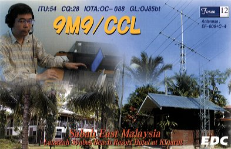
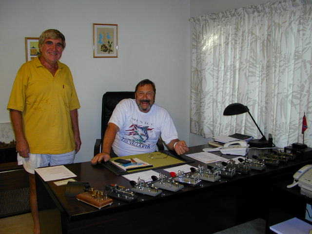

|
Flash ! DX
|
|
Flash ! DX
|
[Back Issues Mar.2002] TIME:UTC(JST-09:00)Report from JA1RJU (PM95sq) 25-31.Mar.2002(00:00a) ◎ 9M6JU運用のため25.Mar-04.Apr.の"Flash DX"はお休みしました。 24.Mar.2002(15:00c) (EH7 21:44 50.100 CW JA2) *??-TV 23:00- 48.242 -- weak LP EU YJ8UU 02:47 50.110 SSB *VK-TV 09:00- 46.172 -- VK8RAS 09:00- 50.047 CW Beacon VK6RSX 09:00- 50.304 CW Beacon VK4ABP 09:00- 52.347 CW Beacon VK4DB 09:02 50.110 SSB 23.Mar.2002(17:00e) *??-TV 23:40- 48.242/250 -- weak LP EU (XR0X 03:46 50106.0 CW JR6 PL-36) (CP6/N6XQ 04:22 50102.0 CW JR6 PL-36) XW0X 09:14 50.126 SSB (5B4AGM 09:36 50.110 CW SC JA2-) JY9NX 09:37 50.110/170 CW SC VK6JQ 09:40 50.110/108 CW VK6RSX 10:00- 50.304 CW Beacon VK8AH 12:16 50.110 CW VR2XVD 13:00 50.110 SSB VK4AFL 13:55 50.110 CW VK4CV 14:15 50.110 SSB 22.Mar.2002(17:00e) *VK-TV 03:00- 46.172 -- VK8RAS 07:45- 50.047 CW Beacon VK6RPH 07:45- 50.066 CW Beacon VK6RSX 07:45- 50.304 CW Beacon VK4ABP 07:45- 52.347 CW Beacon FR1GZ 07:48 50.115 SSB *9M-TV 08:30- 48.240/260 -- VK6WD 09:38 50.110 SSB VK6RSX 12:00- 50.304 CW Beacon HL1KTX 13:10 50.110 CW (ZF1DC 15:17 50.110/140 SSB LP JA2-) 21.Mar.2002(15:00e) *??-TV 22:40- 48.242/250 -- LP EU (9H1AZ 23:01 50.110 CW LP JA3-JA6) FK8CA 23:58 50.110 CW FK8CA 00:00 50.110/090 CW (EH7CD 00:08 50.115 CW LP JA3-JA6) (ZD8CSA 00:13 50.135 SSB LP JA5-JA6) VK6JQ 00:56 50.110 CW (XR0X 02:30- 50.106 CW JA2-) *9M-TV 04:00- 48.240/260 -- 5B4FL 08:38 50.105 CW SC 240deg (IT9RZR 09:00 50.105/110 CW JA4-JA6) (OD5//OK1MU 09:17 50.092 CW JA6) VK6JQ 09:58 50.110 CW
|
◎ 今朝は48MHz帯のTVが強力に入感、ロングパスのヨーロッパのオープンが期待されたが、
1エリアではこのコンデションも00:00z頃には下降、入感エリアは太平洋方面(FK8、VK6)に移ってしまった。
この時間帯にJA3以西ではヨーロッパ(EH7、9H1)がオープン、JA5やJA6ではZD8CSA(Ascension Is)とQSOしている。
02:30z頃にはJA2以西で弱いXR0Xが入感。夕方に南西のスキャッターで5B4FLが聞こえていた。 春分の日のこの日、関東地方(PM95)は昼前から寒冷前線の接近により台風並みの南西の強風が吹き荒れた。 午後からの入感リポートは"一時休止"。 |
20.Mar.2002(15:00f)
*??-TV 22:50- 48.2502 -- LP EU weak
*VK-TV 06:00- 46.172/240 --
*ZL-TV 06:00- 45.24/25/26--
VK8RAS 06:00- 50.047 CW Beacon
VK6RSX 06:00- 50.304 CW Beacon
VK4ABP 06:00- 52.347 CW Beacon
VK8RAS 09:30- 50.047 CW Beacon
VK6RSX 09:30- 50.304 CW Beacon
*VK-TV 11:00- 46.172/240 --
*ZL-TV 11:00- 45.24/25/26--
ZL-TV 11:00 50.750 FM TV Audio
VK8MS 11:01 50.110 SSB
FK8CA 11:09 50.110 CW
V73AT 11:12 50.110 CW
VK4TL 11:14 50.110 SSB
KH6/KF6GYM 11:15 50.110 SSB SC
VK4FNQ 11:31 50.110/130 SSB
DU1/SQ9BOP 12:30 50.125 SSB
YB0CBI 14:19 50.110 SSB
DU1/SQ9BOP 14:20 50.125 SSB
DU1/GM4COK 14:25 50.110 SSB
| ◎ 3月17日の"ヨーロッパ・カリブ大オープン"以来、夜間のロングパスは鳴りを潜めてしまった。 SSN/SFはここのところ徐々に下降しているものの、このまま落ち込んでしまう事は無いとは思われるが、 何とも気がかりなコンデション。 |
19.Mar.2002(15:00e)
*??-TV 22:30- 48.2502 -- LP EU
(EU's 23:00-23:15 50.090- CW/SSB into JA7)
(IT9RZR.9H1AZ.9H1BT.EH5AX.EH6DD.IS0GQX.I5MXX.etc)
*??-TV 23:30-45 48.252 -- LP EU
*VK-TV 00:00- 46.172/240 --
(XR0X 02:23 50.106 CW JA6)
(XR0X 02:29 50.106 CW/SSB JR6 PL-36)
*VK-TV 11:00- 46.172 --
VK8RAS 11:00- 50.047 CW Beacon
VK6RSX 11:00- 50.304 CW Beacon
VK4ABW 11:42 50.110 CW CQ LP
VK4ABW 13:13 50.110 SSB
VK4FNQ 13:36 50.110 SSB
|
◎ 3月16日から運用が開始された南米・San Felix Island(Chile)のDX-pedition、XR0Xが九州、沖縄にオープンした。
沖縄では入感時間が数分の短いものだったが、信号は強力でCW/SSBでQSO出来ている。 CE(Chile)本土とは別エンティティーとなるCE0(San Felix & San Ambroiso Is)は、 1992年3月10日にSan Ambroiso Isから運用したXQ0X以来10年ぶりのQSOとなる。 XR0Xの周波数は50.106MHz、運用は3月30日までの予定。 |
18.Mar.2002(15:00f)
*??-TV 22:20- 48.2502 -- LP EU
*??-TV 23:20- 48.2424 -- ↓
IT9RZR 23:45 50.160 CW
I0WTD 23:53 50.118 CW
I0JX 23:56 50.086 CW
*9M-TV 04:30- 48.240/260 --
*VK-TV 04:30- 46.172 --
VK8RAS 04:30- 50.047 CW Beacon
VK6RSX 06:48- 50.304 CW Beacon
VK4JH 06:51 50.110 CW
V73SIX 09:00- 50.014 CW Beacon
(IT9RZR 10:00 50.105 CW SC JA2-6)
VK4WDM 10:24 50.110 SSB
VK6RSX 10:25- 50.304 CW Beacon
VK8MS 10:29 50.110 SSB
VK6JQ 11:12 50.110 CW
VK4CH 11:21 50.110 CW
VK4DB 12:00 50.110 CW
V73AT 12:09 50.110 CW
VK4CXQ 12:17 50.110 CW
DU1/GM4COK 12:33 50.110 CW/SSB
VK4FNQ 12:45 50.115 SSB
VK4ABW 13:09 50.110 CW
VK8MS 13:50 50.110/125 SSB
DU1EV/B 13:55- 50.0064 CW Beacon PK04mp
YC1GTS 14:00 50.115 SSB
DU1EV 14:01 50.125 SSB Beacon off
YB0CBI 14:05 50.120 SSB
9M6/JA1OEM 14:13 50.112/118 CW/SSB
VK8MS 14:34 50.110 CW
| ◎ "昨日の今日"で期待された夜間のロングパスのヨーロッパ、カリブは"昨夜の時間"になってもオープンしなかった。 残念ながら"50MHzの常識"は今回も生きていた。 |
17.Mar.2002(17:00f)
*??-TV 22:30- 48.2502 -- LP EU
*??-TV 23:00- 48.2502 -- ↓
CE-FM 23:00 47.900 -- CE-Music
CE3SAD 23:02 50.130 SSB
(CE4WJK 23:10 50.120 SSB JA1-)
LU2NI 00:55 50.105 SSB
PY3KN 00:58 50.125 SSB
LU9EHF 01:07 50.115 SSB
LU8MB 01:24 50.135 SSB
PY2LED 01:26 50.145 SSB
PY5DJ 01:35 50.140 SSB
ZP6CW 01:35 50.095 CW UP
PP5XZ 01:39 50.147 SSB
ZP5PT 01:45 50.125 SSB
CE3SAD 01:52 50.180 SSB
XQ3SIX 01:53 50.170 SSB
CE4WJK 02:03 50.163 SSB
PY5DJ 02:06 50.108 CW
KH6/KF6GYM 02:10 50.145 SSB
CE3RR 02:16 50.120 SSB
KH6HME/B 02:20- 50.0615 CW Beacon
PY2XAT 02:23 50.140 SSB
PY2PAI 02:30 50.104 CW
LU9EHF 02:36 50.125 SSB
LU9AEA 02:38 50.118 SSB
FK8GX 02:40 50.100 CW
PY5DJ 02:45 50.108 CW
LU1DZK 02:45 50.155 SSB
ZP6CW 02:50 50.095 CW
FR1GZ 09:08 50.110/115 SSB
*VK-TV 09:30 46.172 --
VK8RAS 09:30- 50.047 CW Beacon
VK6RSX 09:30- 50.304 CW Beacon
VK4ABW 10:13 50.110 CW
9H1BT 11:55 50.115 SSB LP
IT9RZR 11:55 50.104 CW ↓
EH5AX 11:58 50.135 SSB
CT3FT 12:00 50.145 SSB
EH8JF 12:01 50.127 SSB
EH3CQQ 12:01 50.120 SSB
EH3LL 12:05 50.130 SSB
V73AT 12:06 50.130 SSB
EH5AX 12:08 50.135 SSB
IT9RZR 12:09 50.160 SSB
CT1ALF 12:09 50.160 SSB
EH5AAJ 12:12 50.104 CW
EH7AJR 12:15 50.097 CW
EH7KW 12:33 50.104 CW
EH3LL 12:34 50.130 SSB
EH7KW 12:44 50.185 SSB
IT9RZR 12:48 50.160 SSB
EH3LL 12:52 50.130 SSB
FJ5DX 12:52 50.125 SSB
FJ5DX 12:57 50.125 SSB UP 50.130
FG5FR 13:10 50.107 CW
FM5WD 13:10 50.097 CW UP
PJ2MI 13:10 50.120 SSB
YV5GRV 13:32 50.115 CW
FG5FR 13:38 50.107 CW
FJ5DX 13:40 50.125 SSB
P43E 13:47 50.149 SSB
VK8RAS 13:50- 50.047 CW Beacon
PJ2MI 13:52 50.120/110 SSB
P49MR 13:53 50.115 SSB
YC1CBI 14:14 50.125 SSB
VK8AH 14:25 50.110 SSB
YC1GTS 15:03 50.105 CW
DU1/GM4COK 15:12 50.115 SSB
YB5QZ 15:18 50.105 CW
BD9BL/7 15:45 50.110 SSB
|
◎ 朝のロングパスは"不発"に終わったものの、久しぶりに南米が大オープンした。
1エリアではあまり相性の良くないPYをはじめ、LU、ZP、CE(XQ)が同時に入感するFBなコンデションだった。
先週に引き続き、2週続けての日曜日のDXの入感で、"週末DXer"には嬉しいオープン。 嬉しいオープンの"第二幕"は夜になって突然のヨーロッパのロングパスで始まった。 午前中のオープンが"常識"とされていたヨーロッパのロングパスが、何と12時間も遅い夜に大オープン。 信号も朝のオープンに比べ信じられないほど強力だった。 ただし、JAからヨーロッパ向けの電波は逆にそれほど強く届いていない感じだった。 これはロングパスの伝搬ルートに関係するF2、TEPでの反射が朝と夜では逆になっているためと思われる。 いずれにしてもこの時間帯のロングパスのヨーロッパの入感は6mでは過去に例のない伝搬だった。 今日の"驚きのオープン"はこれでは終わらなかった。 なんと、このヨーロッパの入感と平行してロングパスのカリブ方面が同時にオープンしてきた。 ヨーロッパのロングパスの入感方向が南東だったため、南西から入感するカリブはアンテナ方向が真横となるため、 入感当初はカリブのオープンに気づいた局は少なかった。 クラスターにリポートが上がった12:50z頃から"猛烈なパイル"が再び始まった。 昨日オープンしていたFG5に加えて、FJ5(French Saint Martin)、FM5(Martinique)、PJ2/M(Netherlands Antilles)、 P4(Aruba)、YV(Venezuela)などが信じられないほどの強さで入感した。 |
16.Mar.2002(16:00e)
*??-TV 22:00- 48.2502 -- LP EU
I5MXX 22:18 50.100 CW LP CQ
(FR1GZ 09:04 50.110/115 SSB JA2-)
(IT9RZR 10:20 50.090 CW SC JA2-)
VK8RAS 11:30- 50.047 CW Beacon
VK6RSX 11:30- 50.304 CW Beacon
VK4ABP 11:30- 52.347 CW Beacon
VR2ZGC 11:57 50.110 SSB
VR2IL 12:10 50.110 SSB
VR2KW 12:18 50.110/125 SSB
*9M-TV 12:30- 48.240/260 --
VK4ABW 12:30 50.110 CW
DU1/GM4COK 12:30 50.110 CW
BX2AB 12:31 50.110 CW
9M2/JI1ETU 12:40 50.085 CW Beacon
VK8MS 13:25 50.110 CW/SSB
DU1EV 13:28 50.110 CW
VK4ABW 13:29 50.110 SSB
VR2XMC 13:31 50.110 SSB
YF1OO 13:44 50.110 CW
VR2XVD 13:46 50.110 SSB
FG5FR 14:07 50.107 CW LP
DU1BP 14:28 50.130 SSB
DU1EV 14:38 50.092 CW
YC1DYY 15:09 50.115 SSB
(7Q7RM 18:59 50.107 CW JR6 PL-36)
| ◎ 朝のロングパスのヨーロッパはイタリアが短時間聞こえただけ。 昨夜に引き続いて夜間のロングパスで"カリブ"がオープン。 GuadeloupeのFG5FRは1エリアでも強力に入感していたが、"呼びっぱなし"ではまともなQSOは出来ない。 Indonesiaにはスペイン語は通じない！?。 |
15.Mar.2002(17:00f)
(I's 22:45 50.097 CW LP JA7)
*??-TV 23:00- 48.250/242 -- LP EU
EH5NO 23:21 50.100 CW LP
9H1CG 23:24 50.090 CW
IS0GQX 23:25 50.115 CW
EH7KW 23:34 50.105 CW
SV1DH 23:35 50.103 CW
CT1HZE 23:48 50.118 CW
EH8BPX 23:50 50.135 SSB
CT1DYX 23:54 50.137 SSB
FK8HA 23:55 50.110 CW
VK4PU 23:59 50.110 CW
*??-TV 00:00- 48.242/252 -- LP EU
*VK-TV 00:00- 46.172/240 --
EH5NO 00:04 50.100 CW
*9M-TV 06:30- 48.240/260 --
9M6/JA1OEM 07:06 50.110/115 SSB
VK8RAS 07:25- 50.047 CW Beacon
VK6RSX 07:25- 50.304 CW Beacon
FR1GZ 08:08 50.110/115 SSB
FR1GZ 09:00 50.115 SSB
9M6/JA1OEM 11:45- 50.115 SSB
VK4ABW 12:56 50.110 SSB
VK4CXQ 12:58 50.110/105 SSB/CW
VK8RAS 13:10- 50.047 CW Beacon
VK6RSX 13:10- 50.304 CW Beacon
VK4ABP 13:10- 52.347 CW Beacon
VK4FNQ 13:13 50.110 SSB
VK8MS 13:16 50.110 CW
VK4ABW 13:43 50.110 SSB
YF1OO 14:07 50.110 SSB/CW
DU1/GM4COK 14:20 50.110 CW
(ZF1DC 15:50 50.140 SSB LP JA2-)
(JA6WFM/HR3 16:00 50.110 CW/SSB LP JA2-)
|
◎ 早朝のロングパスのヨーロッパがFBにオープンしている。
コンデションは長続きしないが、ピークでは驚くほど強力な信号で入感する。
オープンするエリアが移動するので、タイミングを外すと応答率は"絶望的"に悪くなる。 夕方に早々とレユニオン(Reunion I.)のFR1GZが入感していた。 アフリカ大陸に近いレユニオンがこの時期に本土で入感するのは珍しい。 沖縄では夜間のロングパスで中米、カリブ海が入り始めた。 |
14.Mar.2002(15:00e)
*??-TV 22:30- 48.250/242 -- LP EU
IT9RZR 22:30 50.090 CW
9H1XT 23:00 50.094 CW
IT9RZR 23:18 50.130 SSB
*ZL-TV 00:00- 45.24/25/26--
*VK-TV 00:00- 46.172 --
FK8HA 02:30 50.135 SSB
VK4CP 04:00 50.110 SSB
VK8RAS 08:20- 50.047 CW Beacon
VK6RSX 08:20- 50.304 CW Beacon
VK4ZSS 08:43 50.110 SSB
VK4APG 09:28 50.110 SSB
VK4KLC 09:31 50.105 SSB
VK6JQ 11:32 50.110 CW
VK8RAS 12:10- 50.047 CW Beacon
VK6RSX 12:10- 50.304 CW Beacon
DU1EV 12:24 50.110/140 SSB QSO with HZ1MD
4F1OZ 12:27 50.140 SSB QSO with HZ1MD
9M6/JA1OEM 13:24 50.111/117 SSB
DU1/SQ9BOP 13:35 50.115 SSB QSL via SP6GVU
DU1BP 13:50 50.135 SSB
(ZF1DC 15:30 50.110 SSB LP JR6 PL-36)
13.Mar.2002(15:00e)
*??-TV 22:40- 48.2502 -- LP EU
*??-TV 23:30- 48.2424 -- LP EU weak
*??-TV 00:00- 48.2502 -- LP EU
*ZL-TV 00:00- 45.24/25/26--
*VK-TV 00:00- 46.172 --
FK8CA 01:56 50.110 CW
*9M-TV 07:30- 48.240/260 --
V73SIX 09:00- 50.014 CW Beacon
VK8RAS 09:00- 50.047 CW Beacon
VK4CH 09:05 50.110 SSB CQ EU
5W1SA 09:15 50.115 CW QSL via JH7OHF
FK8CA 10:03 50.110 CW
9M6/JA1OEM 11:55 50.115 CW/SSB
VK4CXQ 12:20 50.110 CW
YF1OO 12:54 50.115 CW/SSB
YC1MH 13:07 50.115 SSB
DU1EV 13:34 50.120 SSB
12.Mar.2002(15:00f)
*ZL-TV 22:20- 45.24/25/26--
*VK-TV 22:20- 46.172/240 --
(LU's 23:03 50.110 SSB JA8)
(IT9RZR 23:03 50.108 CW JA6)
IT9RZR 23:20 50.090 CW CQ
*??-TV 00:00- 48.242/2502-- LP EU weak
*9M-TV 00:30- 48.260 --
*CE-FM 01:30- 47.900 -- CE Music
VK8RAS 06:20- 50.047 CW Beacon
VK6RSX 06:20- 50.304 CW Beacon
VK2QF 06:27 50.107 CW CQ EU
VK4BLK 06:27 50.103 CW
VK6AOM 06:33 50.110 SSB
VK4APG 06:40 50.110 SSB
VK8RAS 07:00- 50.047 CW Beacon
VK4RGG 07:00- 50.0574 CW Beacon
VK6RPH 07:00- 50.0657 CW Beacon
VK6RSX 07:00- 50.304 CW Beacon
VK6RBU 07:00- 50.3055 CW Beacon
VK4ABP 07:00- 52.347 CW Beacon
VK4ZSS 07:40 50.110/120 SSB
VK2QF 07:40 50.110 CW
VK4BLK 07:42 50.102 CW CQ EU
VK4GI 07:43 50.136 SSB
VK6UMG 07:52 50.110/150 SSB
FK1TK 07:52 50.110 SSB
VK2BA 07:56 50.110 SSB CQ EU
FK8CA 08:11 50.110 CW/SSB
FK8HA 08:12 50.110 CW/SSB
VK2ZXC 08:17 50.110 SSB
VK2YVG 08:21 50.110 SSB
VK4ZTL 08:29 50.110/120 SSB
VK2JHN 08:29 50.110 SSB
VK4CH 08:52 50.110 SSB CQ EU
VK6UMG 09:00 50.110 SSB
V73GT 09:08 50.115 CW
V73SIX 09:08- 50.014 CW Beacon
VK4RGG 11:00- 50.0574 CW Beacon
VK4ABP 11:00- 52.347 CW Beacon
VK4AHW 11:06 50.110 SSB
(HZ1MD 11:42 50.110 CW JR6 PL-36)
VK4ZSS 11:20 50.110 SSB
VK4CP 12:03 50.110 SSB
HL1LTC 12:48 50.110 SSB
VK8MS 12:50 50.110 CW
VK4ABW 13:04 50.110/115 SSB
DU1/GM4COK 14:07 50.110 SSB
9M6/JA1OEM 14:32 50.115 SSB
11.Mar.2002(15:00e)
V73SIX 22:20- 50.014 CW Beacon
*ZL-TV 22:30- 45.24/25/26--
*VK-TV 22:30- 46.172/240 --
VK4PU 22:46 50.110 CW
VK2ZXC 22:46 50.110 SSB
*??-TV 00:00- 48.2502 -- LP EU
*??-TV 00:00- 48.2424 -- LP EU
*ZL-TV 00:00- 45.24/25/26--
*VK-TV 00:00- 46.172/240 --
V73SIX 00:00- 50.014 CW Beacon
9H1CG 00:58 50.110 SSB LP
EH5NO 00:59 50.130 SSB
EH5AX 00:59 50.130 SSB
CT1ALF 01:00 50.140 SSB
EH7CD 01:07 50.115 SSB
CT1DYX 01:10 50.135 SSB
EH5AX 01:14 50.130 SSB
EH5NO 01:15 50.130 SSB
CT1FOH 01:23 50.150 SSB
EH5NO 01:30 50.100 CW
*9M-TV 01:30- 48.240/260 --
EX8MLT 03:50 50.110 CW/SSB
XU7ACF 07:00 50.105 CW/SSB OP & QSL DF8AN
VK8RAS 09:10- 50.047 CW Beacon
VK6RSX 09:10- 50.304 CW Beacon
(HZ1MD 09:54 50.110 SSB JR6 PL-14)
VK4ABP 12:00- 52.347 CW Beacon
VK4JH 12:30 50.110 CW
VK8MS 12:30 50.110 SSB
DU1BP 12:38 50.135 SSB
9M6/JA1OEM 12:40 50.115 SSB UP 5
9M6SMC 12:50- 50.0144 CW Beacon
VK6RSX 14:10- 50.304 CW Beacon
9M6/JA1OEM 14:20 50.112 SSB
| ◎ 昨日に引き続き01:00z頃からロングパスのヨーロッパがオープン。 EH、CTが約30分ほど聞こえていたが、CQを連発するCT1FOHに応答しているのは1エリアだけだったので、 昨日とは異なりCTとのオープンは東日本が良かったもよう。 この時間帯に3エリア以西ではPYとQSOしている。 |
10.Mar.2002(15:00f)
V73SIX 22:30- 50.014 CW Beacon
IT9RZR 22:41 50.103 CW LP
(EH6SA 22:44 50.105 CW JA2-6)
IT9RZR 22:46 50.090 CW CQ
EH7KW 22:59 50.115 CW
*ZL-TV 23:00- 45.24/25/26--
*VK-TV 23:00- 46.172/240 --
ZL3TY 23:06 50.110 CW
(CT1DYX 23:10 50.120 SSB JA4-6)
(CT1EEB 23:12 50.140 SSB JA4-6)
(CT3DL 23:15 50.110 SSB JA4-6)
EH8BPX 23:30 50.180 SSB
EH8BPX 23:40 50.180 SSB UP 3-10
EH8JF 23:53 50.125 SSB
*??-TV 00:00- 48.250/242 -- LP EU
*ZL-TV 00:00- 45.24/25/26--
*VK-TV 00:00- 46.172/240 --
EH5VQ 00:02 50.105 CW LP
EH8BPX 00:05 50.180 SSB
EH8JF 00:12 50.125 SSB
EH6SA 01:00 50.105 CW
EH7KW 01:30 50.099 CW
EH6SA 01:55 50.105 CW
EH9IB 02:10 50.180 SSB
EH6DD 02:19 50.170 SSB
EH7CD 02:20 50.115 SSB
EH7KW 02:26 50.136 SSB
EH8JF 02:45 50.125 SSB
CT1ALF 02:57 50.130 SSB
EH7KW 02:58 50.136 SSB
(EX8MLT 04:25 50.110 SSB/CW JR6 PL-14)
*9M-TV 05:00- 48.240/260 --
VK4JH 05:05 50.110 CW
V73GT 09:10 50.110 CW
VK8RAS 09:30- 50.047 CW Beacon
VK6RSX 09:30- 50.304 CW Beacon
VK8TM 11:50 50.120 SSB
N7ET/DU7 11:53 50.120 SSB
VK4ABP 11:55- 52.347 CW Beacon
VK4CXQ 11:58 50.109 CW
DU1/GM4COK 12:11 50.110 CW/SSB
YB0CBI 12:27 50.110 SSB
KH2/JL1XYU 12:50 50.130 SSB
(J28EX 12:51 50.115 CW JR6 PL-14)
BX2AB 13:30 50.114 CW
VR2PX 13:35 50.097 CW
VR2XMT 13:58 50.110 SSB
YC1GTS 14:09 50.110 SSB
DU1/GM4COK 14:10 50.110 SSB
|
◎ 早朝から昼過ぎまで、ロングパスのヨーロッパが4時間以上に渡ってオープンした。
1エリアではEH(スペイン)系のエンティティーとのコンデションが良く、EH6(Balearic Is)、EH7(Spain)、
EH8(Canary Is)、EH9(Ceuta & Melilla)の4つのエンティティーが入感した。 西日本でオープンしていたCT1 (Portugal)とCT3 (Madeira Is)は、1エリア(PM95sq)では後半にCT1が短時間入感しただけ。 |
09.Mar.2002(15:00f)
IT9RZR 23:25 50.090 CW LP
IW0FC 23:45 50.085 CW
(EH9IB 23:52 50.140 SSB JA6)
I0WTD 23:55 50.118 CW
IT9RZR 23:57 50.160 SSB
*??-TV 00:10- 48.250/242 -- LP EU
9H1BT 00:11 50.120 SSB LP QSX UP 5-10KHz
9H1CG 00:22 50.097 CW
IT9RZR 00:25 50.160 SSB
I0WTD 00:30 50.118 CW
IK0FTA 00:40 50.147 CW
(EH6DD 00:43 50.190 SSB JA6)
IT9RZR 00:52 50.090 CW
9H1BT 00:54 50.120 CW Calling HL1LTC
EH7KW 00:58 50.142 CW/SSB
EH7CD 01:18 50.137 SSB
(PP5JD 01:20 50.110 SSB JA4-6)
*??-TV 01:30- 48.250/242 -- LP EU
*ZL-TV 01:30- 45.24/25/26--
*VK-TV 01:30- 46.172/240 --
9H1BT 01:32 50.120 CW LP
FK8VA 02:15 50.110/120 SSB
EH7KW 02:30 50.119 SSB/CW
EH7CD 02:30 50.137 SSB CQ
V73SIX 06:15- 50.014 CW Beacon
VK8RAS 06:15- 50.047 CW Beacon
VK6RSX 06:15- 50.304 CW Beacon
VK4ABP 06:15- 52.347 CW Beacon
9M6/JA1OEM 06:20 50.115 CW UP
9M6SMC 07:00- 50.0144 CW Beacon
9M6AAC 08:18 50.150 CW CQ
9M6AAC 09:24 50.110 CW CQ
9M6/JA1OEM 09:43 50.115 CW CQ
KH2/JL1XYU 12:22 50.130 SSB
VK8RAS 12:30- 50.047 CW Beacon
VK6RSX 12:30- 50.304 CW Beacon
VK4ABP 12:30- 52.347 CW Beacon
9M6/JA1OEM 12:39 50.115 CW CQ
KH2/JP1FTR 13:00 50.145 SSB
(J28EX 13:40 50.110 CW JR6 PL-14)
VK8MS 13:48 50.110 SSB
VK8AH 14:14 50.110 CW
08.Mar.2002(15:00e)
*??-TV 22:20- 48.250/242 -- LP EU
IT9RZR 22:20 50.100 CW
IT9RZR 23:00 50.160 SSB
IT9XDJ 23:09 50.105 CW
V73SIX 23:10- 50.014 CW Beacon
EH7KW 23:56 50.102 CW
IT9RZR 00:00 50.092/090 CW LP
EH7KW 00:00 50.102 CW
*??-TV 00:30- 48.250/242 -- LP EU
*ZL-TV 00:30- 45.24/25/26--
*VK-TV 00:30- 46.172/240 --
*CE-FM 01:10- 47.900 -- CE Music
LU9HUP 01:22 50.110 SSB
LU2FFD 01:23 50.110/140 SSB
LU9EHF 01:30 50.110 SSB
LU9AEA 01:32 50.105 SSB
LW4DIR 01:35 50.100 CW
LU3HR 01:37 50.115/118 SSB
LU3DCA 01:37 50.115 SSB
CE3RR 01:50 50.130 SSB
ZP6CW 01:59 50.095 CW
CE4WJK 02:20 50.110 SSB
*CE-FM 02:40- 47.900 -- CE Music
*VK-TV 03:30- 46.172/240 --
VK8RAS 06:45- 50.047 CW Beacon
VK4RGG 06:45- 50.057 CW Beacon
VK6RSX 06:45- 50.304 CW Beacon
VK4ABP 06:45- 52.347 CW Beacon
FK8CA 08:02 50.110 CW
VK2HO 08:57 50.110 SSB
VK4CXQ 09:14 50.110 CW
VK4CP 09:25 50.110 SSB/CW
VK4FNQ 09:29 50.110 SSB
VK4ABW 09:30 50.110 SSB
VK6JQ 12:00 50.110 CW
KH2/JL1XYU 12:02 50.130 SSB
9M6/JA1OEM 12:10 50.113 CW
|
◎ 早朝からロングパスのヨーロッパがオープン...と言っても強力に入感していたのはIT9RZRだけ。
IT9RZRは高地という立地条件の良さで何時も強力に入感する。 ロングパスが一段落した01:20z頃から南米がオープン。 1エリアで入感したLU'sは強力で、この春初の本格的な南米の入感となった。 |
07.Mar.2002(15:00f)
*ZL-TV 23:00- 45.24/25/26--
*VK-TV 23:00- 46.172/240 --
VK2YOC 01:37 50.110 SSB
VK4ZRT 01:40 50.110 SSB
ZL2AQR 02:00 50.110 SSB
VK4AHW 02:08 50.110 SSB
VK2DN 02:15 50.110 CW
VK2HO 02:16 50.110/120 SSB
9M6/JA1OEM 02:18 50.113 CW
VK2CHR 02:27 50.110/160 SSB
VK2YOC 02:40 50.110 SSB
VK8RAS 02:40- 50.047 CW Beacon
EX8MLT 03:20 50.110 CW CQ
EX8MLE 03:21 50.096 CW
EX8MLT 04:15 50.110 SSB
UN6P 04:30 50.120 SSB
*VK-TV 07:00- 46.172/240 --
*9M-TV 07:00- 48.240/260 --
VK4ABW 07:06 50.110 SSB
VK8RAS 07:10- 50.047 CW Beacon
VK6RPH 07:10- 50.066 CW Beacon
VK6RSX 07:10- 50.304 CW Beacon
VK4ABP 07:10- 52.347 CW Beacon
VK4BRG 07:44 50.110 SSB QSO with RU4CE
VK4APG 07:50 50.110 SSB
VK4CH 07:58 50.110 SSB
V73GT 08:55 50.110 SSB QSL via WF5T
VK6TQ 08:57 50.110 SSB
VK6JJ 09:24 50.105 CW
VR2XNG 11:19 50.110/120 SSB
BD7NI 11:20 50.125 SSB
VK4FNQ 11:25 50.150 SSB
VR2KW 11:33 50.080 RTTY
HL1LTC 12:42 50.110 SSB
VK6AOM 12:47 50.110 SSB/CW
HL1KTX 12:56 50.110 CW
VK4CP 13:08 50.110 SSB/CW
VK6RSX 13:45- 50.304 CW Beacon
9M6/JA1OEM 13:48 50.113 CW
DU1BP 14:12 50.130 SSB
|
◎ "火曜日の珍局"だったEX8MLT、EX8MLEも最近では曜日に関係なくアクティブにQRVしている。
今日も03:00z頃から両局がほとんど同時に入感、JAのパイルを捌いていた。 JN1NDY・藤記さんに届いたEX8MLT・Olegからのメールによると、TVが放送されている時間帯は、 10Wのパワーで運用していると。(TNX JN1NDY) Dear Takashi-san Yes,sure,we can work at any time when TV is on but limited on power to 10 W. You know,if you live in urban area and many people look your signal on their TV set...grrr... We try to look on any opening on six and dont miss the propagation. 73 GL de EX8MLT Oleg FB-DX on 6m!! |
06.Mar.2002(16:00f)
V73SIX 22:50- 50.014 CW Beacon
*CE-FM 22:50- 47.900 FM Music
*??-TV 23:00- 48.2502 -- LP EU
*??-TV 23:00- 48.2424 -- LP EU
CX4CR 23:13 50.120 SSB
CX4AAJ 23:25 50.150 SSB
*9M-TV 01:00- 48.240/260 --
*ZL-TV 01:30- 45.24/25/26-- Strong
*VK-TV 01:30- 46.172/240 --
VK4JH 07:22 50.110 CW
VK6RSX 07:45- 50.304 CW Beacon
VK6JQ 11:55 50.110 CW
VK8MS 11:55 50.110/115 SSB/CW QSO with HZ1MD
VK8AH 13:02 50.110 CW
9M6/JA1OEM 13:05 50.113 CW UP2-3
DU1EV 15:21 50.110 CW
05.Mar.2002(15:00f)
IT9RZR 23:07 50.110 CW LP
IT9RZR 23:27 50.090 CW CQ JA loud!
*??-TV 00:00- 48.2502 -- LP EU
*??-TV 00:00- 48.2424 -- LP EU
IT9RZR 00:00 50.090 CW CQ JA LP
EH5NO 00:05 50.110/130 SSB LP
IT9RZR 00:11 50.105 CW
EH7CD 00:16 50.115 SSB
CT1EEB 00:16 50.125 SSB
CT1FMX 00:18 50.135 SSB
EH5VQ 00:31 50.101/099 CW
*ZL-TV 00:30- 45.24/25/26-- Strong
*VK-TV 00:30- 46.172/240 --
ZL4LV 00:53 50.100 SSB TVI Test loud!
V73SIX 01:00- 50.014 CW Beacon
ZL1VHF 01:00- 50.043 CW Beacon
ZL4LV 01:04 50.100 SSB
ZL3TY 01:06 50.110 CW
ZL3JT 01:29 50.110 CW
ZL3SIX 01:30- 50.040 CW Beacon
ZL3TIC 01:39 50.110/140 SSB
*ZL-TV 01:40- 50.740 FM TV-Audio Strong
VK4AHW 01:51 50.110 SSB
VK4PU 01:52 50.110 CW
VK4AFL 02:09 50.110 SSB
FK8CA 02:24 50.110/102 CW
VK2ZXC 02:36 50.110/130 SSB
VK4KR 02:36 50.130 SSB
ZL2AQR 02:39 50.110/120 SSB
VK4LR 02:41 50.120 SSB
FK8CA 02:57 50.110 SSB
EX8MLT 04:22 50.110 CW
VU2ZAP 04:47 50.115 SSB loud!
VU2VVP 04:58 50.110/115 SSB
EX8MLE 05:10 50.096 CW
VU2LO 05:17 50.125 SSB loud! ML88oo
VK4CP 05:26 50.125 SSB
VK2ZXC 05:52 50.110 SSB
VK4NW 06:45 50.110/140 SSB
V73GT 07:20 50.110 CW
VK4NW 07:34 50.110 SSB
VK4CP 08:00 50.110 SSB
9M6/JA1OEM 08:01 50.116 CW/SSB
V73GT 08:53 50.110 CW
VK6JQ 11:32 50.110 CW
DU1/GM4COK 12:24 50.110 SSB
|
◎ 朝のロングパスのヨーロッパは、相変わらず強力な信号を送り込んでくるIT9RZRで始まった。
続いて入感してきたEH5/7も良く聞こえていたが、この頃からJA側のパイルも激しくなった。
EH8、D44のQRVもクラスターにリポートされたが、残念ながらオープンは無い。 昼過ぎから入感してきたVU's(インド)は久しぶりに強力に聞こえていた。 "火曜日"のEX8MLT、EX8MLEも健在で、今日も多くの局がQSOしていたが、1エリアでは信号はそれほど上昇しなかった。 |
04.Mar.2002(15:00f)
*CE-FM 22:30- 47.900 FM Music
*??-TV 23:15- 48.2502 -- LP EU
*ZL-TV 00:30- 45.24/25/26-- Strong
*VK-TV 00:30- 46.172/240 --
VK4NW 02:19 50.110 SSB
VK2ZXC 02:35 50.110 SSB
VK2APG 02:36 50.110 SSB
VK2CHI 02:39 50.110 SSB
VK2HV 02:40 50.110/140 SSB
VK2FA 02:41 50.110 SSB
VK4RGG 02:45- 50.057 CW Beacon
VK8RAS 02:45- 50.047 CW Beacon
VK2OM 02:46 50.110 SSB
VK4CP 04:19 50.110 SSB
FK8GX 05:07 50.110 CW
VK6JQ 06:19 50.110 CW
VK4FNQ 06:20 50.110 SSB
VK4CXQ 07:01 50.110 CW
VK6JQ 07:29 50.106 CW
VK6RSX 07:55- 50.304 CW Beacon
VK4CH 07:56 50.110 CW
(5R8FU 09:40 50.110 CW JR6/JA6)
*VK-TV 10:00- 46.172 -- Evening TEP
V73SIX 10:20- 50.014 CW Beacon
VK8AH 11:04 50.110 CW
9M6SMC 13:20- 50.0144 CW Beacon
|
◎ Trindade Islandから運用していたPW0Tは日本時間の3月4日QRTした。
2月19日から13日間の運用の全QSO数は約65,000、6mでは約1,800QSO、87CTRYだった。 6mでのAsiaとのQSO数は174(2/27日現在)だったが、内容的にはJAと中近東とのQSOと思われる。 JAとのオープンは北日本を中心とした限られた地域だけだったが、 QSO出来た局のほとんどがCW/SSBの両モードで2回以上QSOしているので、 JAからQSO出来た局数は100局を大幅に下回っているはず。
◎ 幻？の9M9=Malaysiaの免許制度= |

03.Mar.2002(15:00g)
*ZL-TV 23:00- 45.24/25/26-- Strong
*VK-TV 23:00- 46.172/240 --
(IT9.EH7.8 23:30- 50.110 CW LP into JR6/JA6)
IT9RZR 00:20 50.090 CW LP
ZL3TY 01:10 50.103 CW
*9M-TV 04:00- 48.240/260 --
VK4ABW 04:12 50.110 CW
VK4JH 04:13 50.110 CW
FK8CA 04:19 50.110 CW
VK4WDM 04:20 50.110 SSB
VK8RAS 04:20- 50.047 CW Beacon
VK4ABP 04:20- 52.347 CW Beacon
VK4ABW 04:42 50.110 CW
VK4CH 05:19 50.110/130 SSB
FK8HA 05:41 50.110/135 SSB
VK4ADC 05:43 50.110 SSB
VK4TZL 06:35 50.110/130 SSB
XW0X 06:35 50.120 SSB
FK8BG 06:50 50.110 CW
VK4NW 07:00 50.170/110 SSB
VK4ZSS 07:03 50.110 SSB
VK2HO 07:51 50.110 SSB
FK1TK 08:07 50.110/150 SSB
V73GT 09:31 50.110 CW
VK4APE 09:31 50.110 CW
9A1Z 09:33 50.102 CW SC 240
S52SK 09:36 50.125 CW
09:39 50.136 SSB
S51SV 09:41 50.103 CW
XW0X 09:44 50.094/133 CW/SSB
V73GT 09:50 50.110 CW
XV3AA 09:54 50.145 SSB
VK6JQ 09:55 50.106 CW
VK6RSX 10:00- 50.304 CW Beacon
YB0CBI 12:52 50.110 SSB
VK8AH 13:47 50.110 CW
02.Mar.2002(16:00f)
*ZL-TV 02:00- 45.24/25/26-- Strong
*VK-TV 02:00- 46.172/240 --
*CE-FM 02:00- 47.900 FM CE Music
FK8CA 02:30 50.105 CW
VK2ZXC 02:45 50.110 SSB
VK2HO 03:00 50.110 SSB
VK2QF 03:02 50.110 CW
VK4AFL 03:15 50.110 SSB
VK2FHN 04:22 50.110 SSB
VK2ZXC 04:30 50.110 SSB
VK4PU 04:51 50.110 SSB
VK4TZL 05:12 50.110 SSB
EY8MM 05:20 50.105 CW
(JY9NX 05:50 50.115 SSB SP into JR6)
VU2RM 06:20 50.102 CW
XW0X 06:25 50.116 SSB
(SV5BYR 06:50 50.100 CW SP into JR6)
*VK-TV 07:00- 46.172/240 --
*9M-TV 07:00- 48.240/260 --
IT9RZR 07:30 50.101/195 CW/SSB 270deg
YT1AU 07:40 50.103 CW
IT9RZR 07:48 50.090 CW
YU7FU 08:02 50.121 CW
VK2QF 08:10 50.107 CW
VK2UMJ 08:15 50.125 SSB
XW0X 08:30 50.110 CW
I0JX 08:30 50.098 CW
VK4BLK 09:03 50.102 CW CQ EU
VK4APG 09:09 50.210 CW
VK4CP 09:22 50.102 CW
VK8RAS 11:20- 50.047 CW Beacon
VK6RSX 11:20- 50.304 CW Beacon
VK4CP 11:28 50.110 SSB
VK8MS 11:30 50.110 CW/SSB
VK4JH 11:35 50.115 SSB
VK4CXQ 12:29 50.110 CW
VK6AOM 12:38 50.110 SSB
VK8MS 13:40 50.110 CW
VK8RAS 14:00- 50.047 CW Beacon
VK6RSX 14:00- 50.304 CW Beacon
VK4ABP 14:00- 52.347 CW Beacon
YB1CBI 14:33 50.110 SSB
DU1/GM4COK 14:33 50.110 CW
YF1OO 15:17 50.110 CW
|
◎ Trindade IslandのDX-pedition・PW0Tは、迎えの船の到着が現地時間の3月4日午後となったため、
当初予定していた3月2日までの運用日程は2日延長、QRTは現地時間の4日午後となった。 6mとRTTYは引き続きQRVしているが、HF帯はこの週末に行なわれているARRL・SSBコンテストに参加している。 PW0Tの最終的なQSO数は60,000以上と予測しているが、6mのQSO数は3月2日現在1,530、エンティティーも81となった。 |
01.Mar.2002(15:00e)
*ZL-TV 22:30- 45.24/25/26-- Strong
XE2EED 23:26-45 50.110/115 SSB SC 130deg
V73SIX 00:10- 50.014 CW Beacon
IT9RZR 00:38 50.108/100 SSB/CW LP loud!
PW0T 00:58 50.105 CW into JA1.7
*9M-TV 01:00- 48.24/25/26--
*VK-TV 01:00- 46.172/240 --
VK2EFT 04:08 50.110 CW
VK8RAS 04:15- 50.047 CW Beacon
VK6RSX 04:15- 50.304 CW Beacon
EX8MLT 05:16 50.110 SSB
UK9AA 05:35 50.100 CW
VK6RSX 11:20- 50.304 CW Beacon
VK6JQ 11:39 50.110 CW
9M6AAC 14:53 50.115 CW
|
◎ 昨日のFBなロングパスのオープンとは打って変わって、今朝聞こえてきたのはIT9RZRだけ。
このロングパスがオープンする少し前に、130-150度方向のスキャッターでXE2EEDが強力に入感。
ロングパスのヨーロッパとかん違いしてパイルに加わったのか、何時も聞きなれている局も多かった。 "火曜日の珍局"、EX8MLTが"金曜日の午後"に突然入感してきた。 周波数は普段QRVしない50.110MHzだったが、今日はTVの妨害は無かったのか？。 これでEX8MLT/MLEの狙い目は"火曜日だけ"ではなくなった。 |
